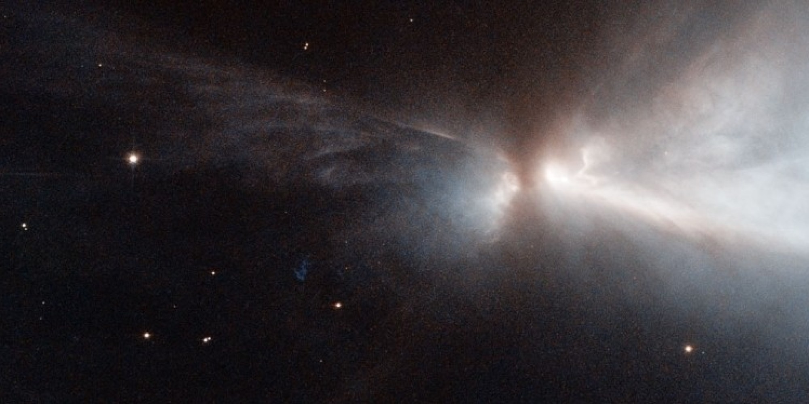
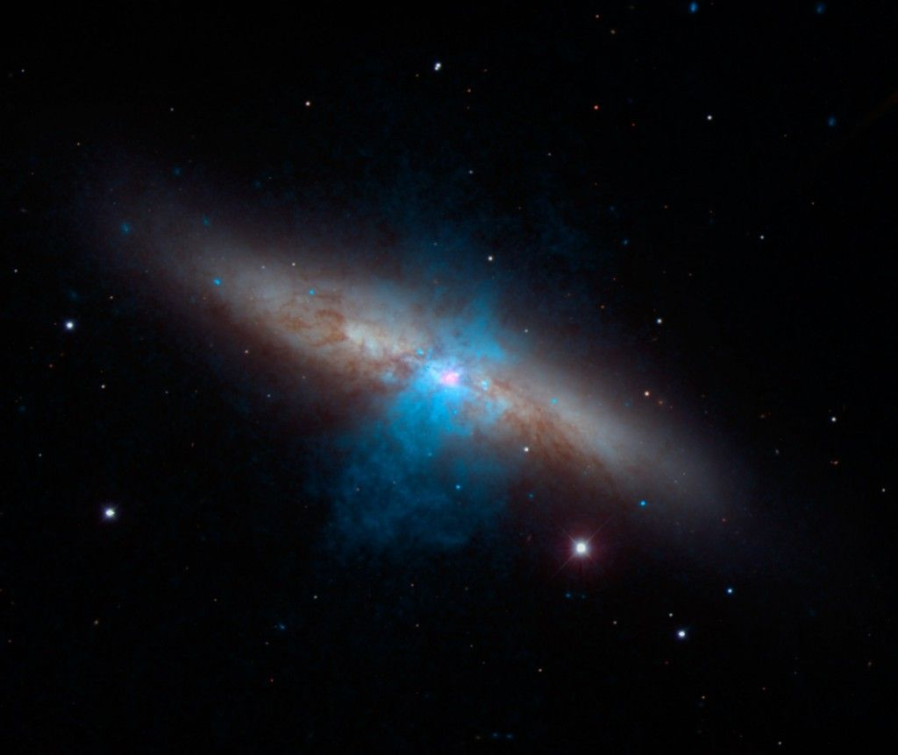

Les étoiles sont d'énormes boules de gaz qui brûlent en permanence.Elles produisent de la lumière et de la chaleur.
Dans le ciel, les étoiles brillent plus ou moins.
Cela dépend de la quantité de lumière qu'elles
émettent mais aussi de leurs tailles.
Il existe différentes tailles d'étoiles :
-Les plus grandes, les supergéantes brillant 10.000 fois plus que le Soleil.
-Les géantes brillant 100 fois plus que le Soleil.
-Les naines qui brillent autant que lui.
Quand on regarde le ciel attentivement
on peut voir que les étoiles ont des couleurs
différentes. Certaines sont bleues, rouges,
orange, d'autres jaunes...
La couleur d'une étoile dépend de sa température :
Les étoiles bleues sont les plus chaudes (~50.000°C), les étoiles rouges, les plus froides (~3000°C).
Quand des nuages de gaz et de poussières se réunissent, une étoile nait. Cela prend des millions d'années. Les gaz chauffent et l'étoile se met à briller.
L'étoile dégage de la chaleur et de la lumière pendant plusieurs millions, parfois plusieurs milliards, d'années.
Puis l'étoile finit par s'éteindre. Elle explose si elle est très grosse. Ou elle refroidit et s'éteint si elle est petite.
